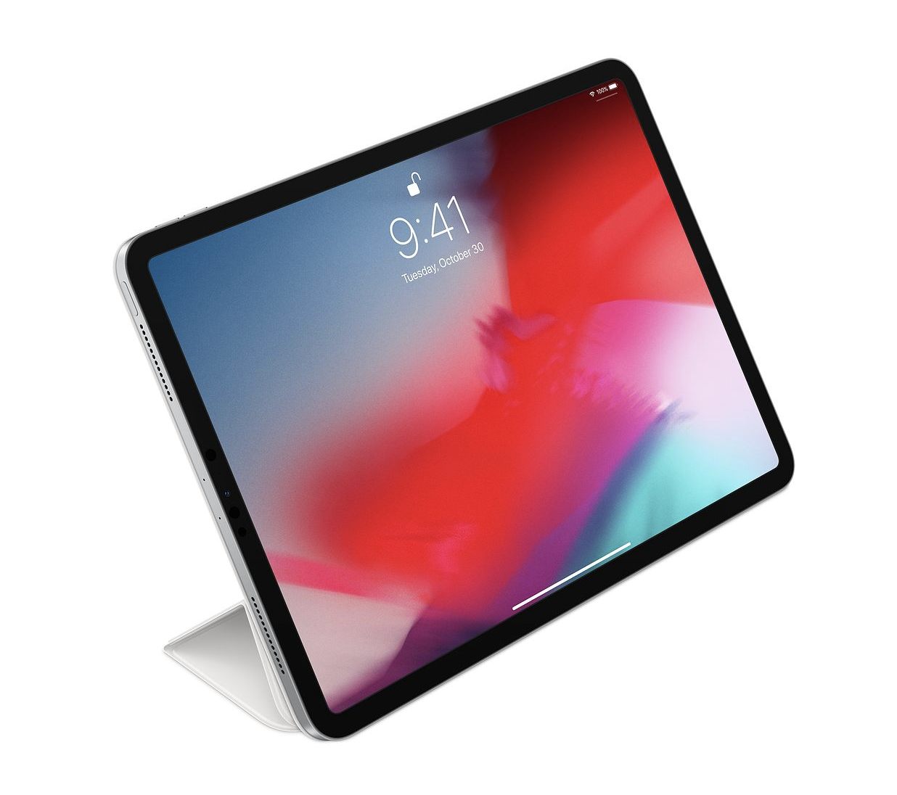
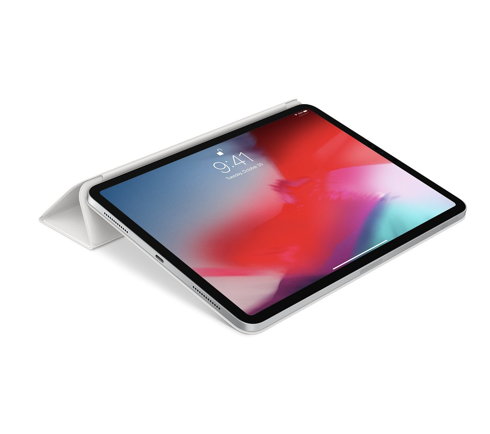
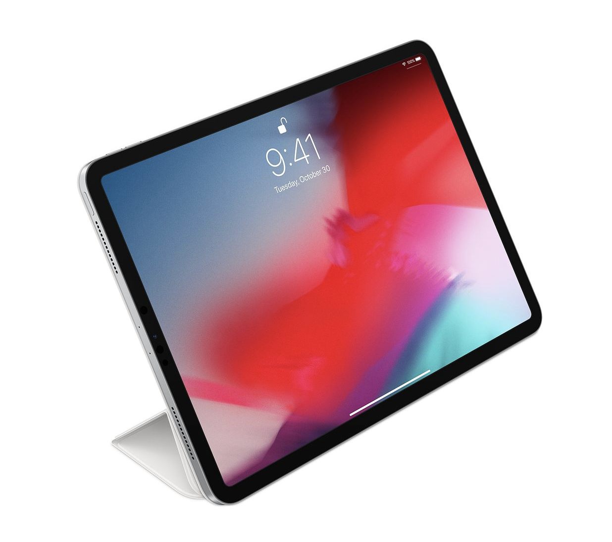
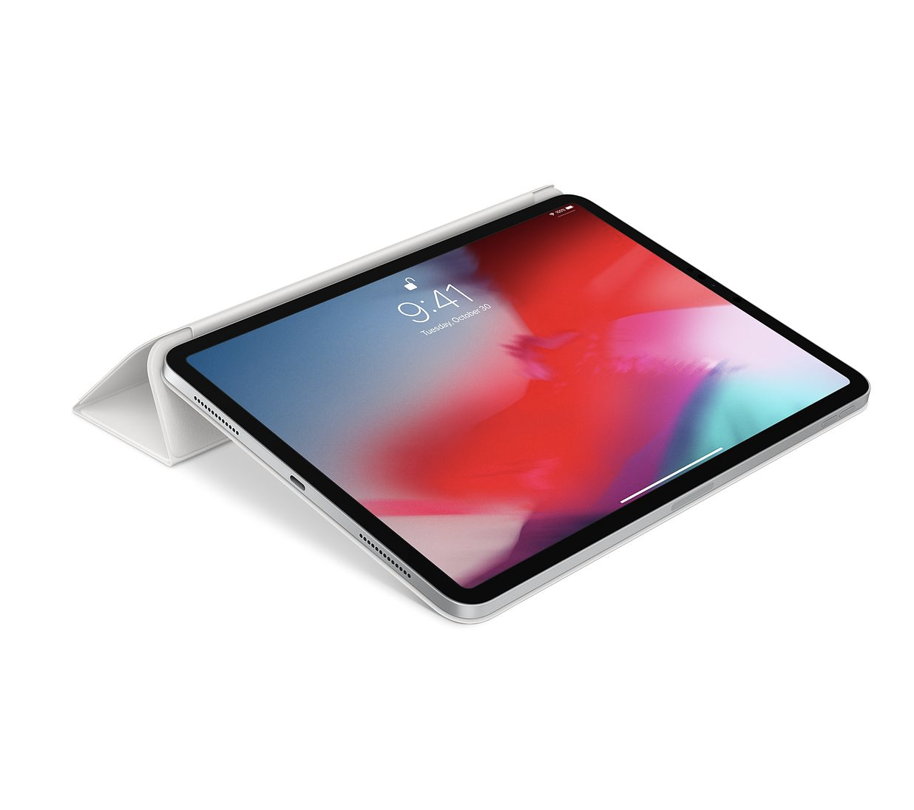

ハッキング対象
今回私がハッキングしたのはiPadのアクセサリーのスマートカバーです。なぜ今回この製品を選んだ
のかと言うと、カバーの三回に分けて様々な方向に曲げていろんな角度でiPadを使うことができると
いう所の機能を素材の特性として捉え、ハッキングしました。
 



制作の動機
今回この素材を生かして作ったのはティッシュを横向きと縦向きにしながらティッシュを使用しても
倒れることなく使用することができると言うものを作りました。
なぜ作ろうと思ったかと言うと単純に横向きや縦向きのままティッシュを引っ張って千切れてしまっ
たという苦い思いを何度か経験しているからです。なので今回この素材と組み合わせることでティッ
シュ箱をどの方向においても安定する接地面積を確保できると思いました。
プロダクト


縦向きで利用した時。 横向きで利用した時。